Partir du chantier
Précisez l’application, le type d’échafaudage et les conditions d’exposition pour choisir le panneau et les interfaces adaptés.
ScaffCover France · Habillage et couverture
Un système de panneaux et de rails pour l’habillage et la couverture de vos échafaudages. Choisissez le confinement adapté au chantier, puis déployez, récupérez et réutilisez vos panneaux.
Conçu pour être déployé. Pensé pour être réutilisé.
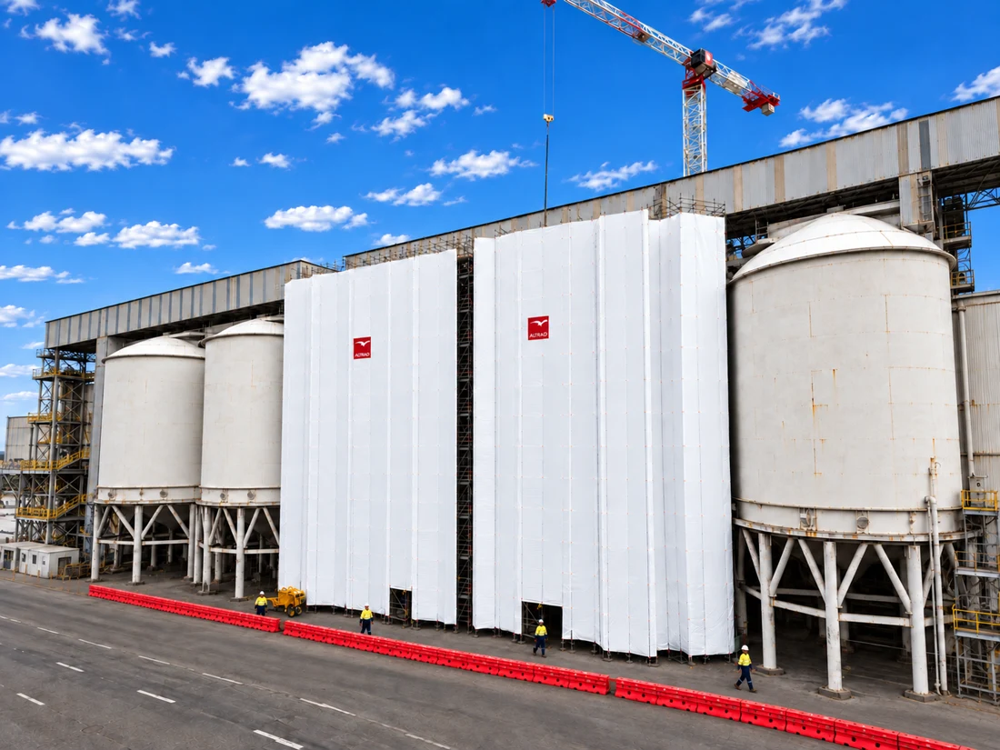
Votre chantier d’abord
Construction, maintenance industrielle, infrastructures ou communication de chantier : commencez par l’usage, puis choisissez le panneau Guard et les composants adaptés à votre échafaudage.
Précisez l’application, le type d’échafaudage et les conditions d’exposition pour choisir le panneau et les interfaces adaptés.
Le rail se fixe à l’échafaudage avec le connecteur adapté. Le bord du panneau s’engage dans le rail pour former un ensemble coordonné.
La barre de suspension, ses accessoires de levage et le kit d’enroulement accompagnent le déploiement, la récupération et le stockage des panneaux.
La gamme Guard
Ventilation et confinement des débris.
Découvrir →02Maîtrise des poussières et des débris, avec un écran visuel pour le chantier.
Découvrir →03Protection des zones de travail contre la pluie et les intempéries.
Découvrir →04Communication visuelle et habillage imprimé sur panneau plein.
Découvrir →05Habillage imprimé associé à la circulation de l’air.
Découvrir →06Confinement pour les opérations de sablage et de traitement de surface, selon le procédé et la configuration étudiés.
Découvrir →Le choix du panneau et de sa configuration se fait selon les besoins et les exigences du projet.
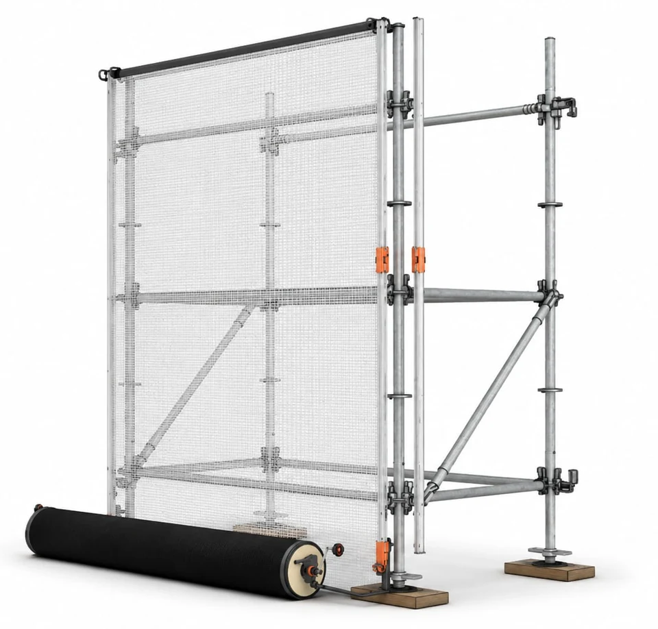
Déployer · Récupérer · Réutiliser
La barre de suspension et sa rallonge articulée permettent d’ajuster l’orientation des panneaux. Les accessoires de levage permettent la manutention depuis la barre. Le kit d’enroulement comprend une manivelle, des axes et une bague adaptée à un collier d’échafaudage standard. La barre peut rester dans le panneau enroulé pour le stockage, puis servir au prochain déploiement.
Pensez au coût sur plusieurs chantiers : achat initial, entretien, récupération et réemploi. ScaffCover associe une fabrication pensée pour maîtriser les coûts à un système réutilisable et adaptable.
Explorer les composantsIngénierie et documentation
Le confinement modifie les sollicitations sur l’échafaudage. La prise au vent, les ancrages et la configuration doivent être examinés pour chaque projet, avec la note de calcul appropriée.
Préparer mon dossier techniqueLe travail relatif aux exigences européennes et la préparation de la documentation technique sont en cours. Notre objectif est de disposer des informations nécessaires au lancement et de confirmer les exigences applicables avant toute fourniture.
Demander une étude de compatibilité →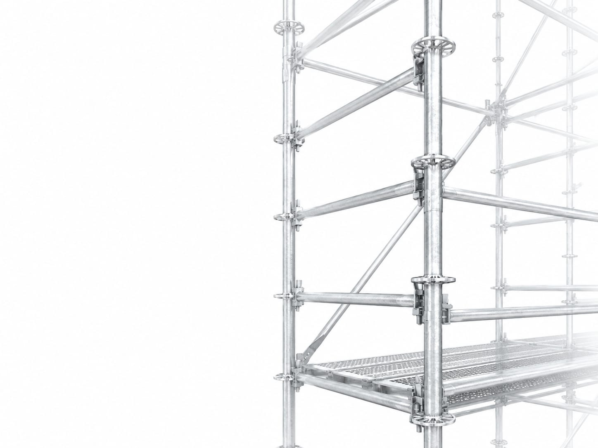
Ensemble à BATIMAT
À BATIMAT, HSF présente ScaffCover au marché français. Retrouvez nos équipes ensemble sur le salon pour découvrir le système et échanger sur votre chantier.
Du 28 septembre au 1er octobre 2026
Paris Expo Porte de Versailles
Hall 5.1 · Stand F038
ScaffCover en France
ScaffCover développe sa présence internationale sous une identité de marque indépendante, ouverte aux professionnels travaillant avec différentes marques d’échafaudage. Déjà disponible en Australie, ScaffCover prépare son lancement en France pour début 2027, avec sa propre équipe et sa propre implantation. Le lieu précis reste à confirmer. L’organisation envisagée comprend un appui de HSF France pour le stockage et la logistique.
Le lancement en France est prévu début 2027. Les modalités de disponibilité et de livraison seront précisées dans le cadre de cette préparation. Vous pouvez dès maintenant nous présenter un chantier ou demander à échanger sur une démonstration.
Découvrez comment le système s’assemble et ce qu’il permet de réaliser sur chantier.
Passons à votre chantier
Indiquez le lieu, le type d’échafaudage, les dimensions et l’usage envisagé. Nous pourrons préparer la prochaine étape avec vous.
Trouvez des réponses pratiques sur le système, les panneaux Guard et la préparation de votre chantier.
Un système de confinement coordonné
La barre de suspension et sa rallonge articulée permettent d’ajuster l’orientation des panneaux. Les accessoires de levage permettent la manutention depuis la barre. Le kit d’enroulement comprend une manivelle, des axes et une bague adaptée à un collier d’échafaudage standard. La barre peut rester dans le panneau enroulé pour le stockage, puis servir au prochain déploiement.
Un système est plus qu’un ensemble de composants. Chaque pièce a un rôle défini, chaque connexion est conçue pour fonctionner avec les autres et ensemble, elles assurent une fonction complète. Pour le confinement, cela signifie prévoir la pose, le maintien et le remplacement du panneau, sans devoir repenser séparément ces connexions pour chaque chantier.
ScaffCover réunit ces choix dans une plateforme coordonnée. Les connecteurs fixent le rail TRAKTEC à l’échafaudage. Les guides introduisent le bord renforcé du panneau dans le rail. La gamme Guard offre différentes options de confinement sur cette base commune. Le panneau et la configuration s’adaptent à l’application, tout en conservant le principe de connexion du système.
Un système coordonné. Davantage de possibilités de confinement.
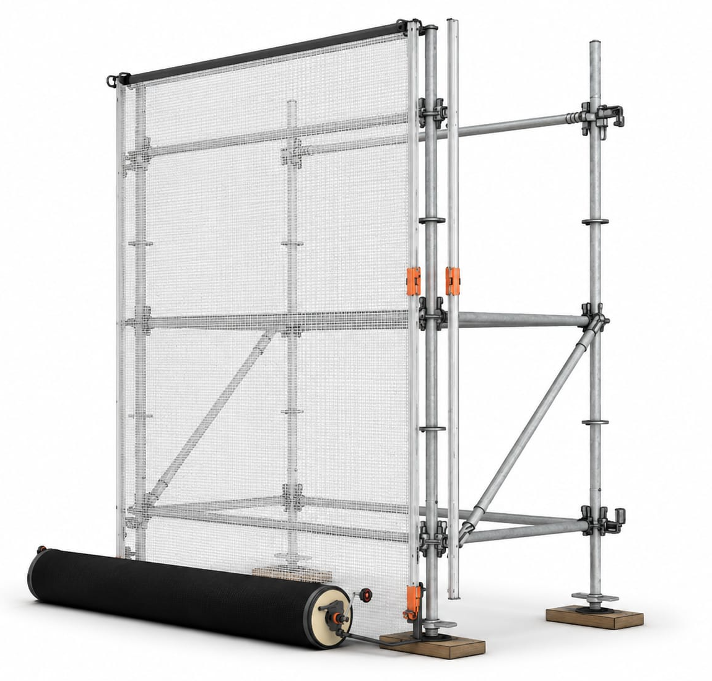
Choisissez un pilier pour découvrir les composants, ou explorez le système en 3D.
Faites glisser pour tourner · Pincez ou faites défiler pour zoomer · Sélectionnez une pièce pour en savoir plus.
Modèle de découverte des produits. Les détails de montage restent propres au projet.
{{ sysActiveItem.purpose }}
{{ sysActiveItem.purpose }}
Track, Core, Connect et Guard ont chacun un rôle défini. Ensemble, ils forment un système de confinement coordonné.
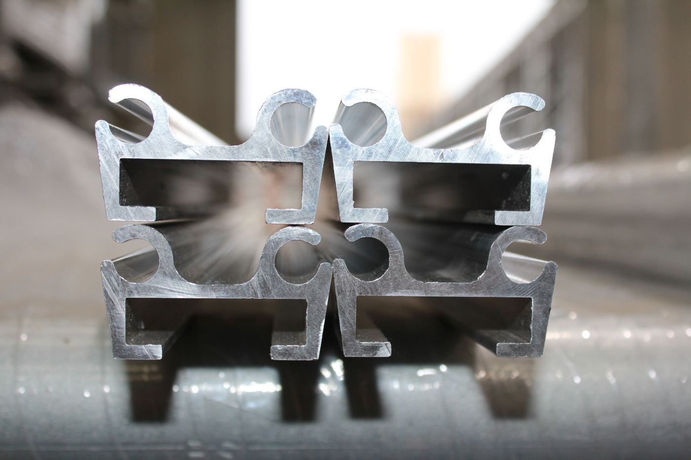
Le rail en aluminium TRAKTEC reçoit et retient le bord renforcé à jonc du panneau. Les rails et barres de suspension constituent l’ossature de positionnement des panneaux dans le système.
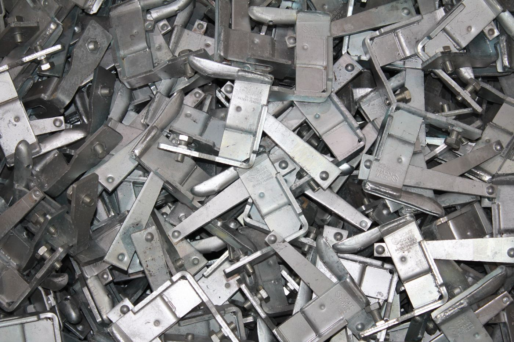
Les connecteurs d’échafaudage, brides et butées constituent les pièces de support. Core relie et positionne le rail sur l’échafaudage, avec des composants choisis selon le type d’échafaudage et la configuration.
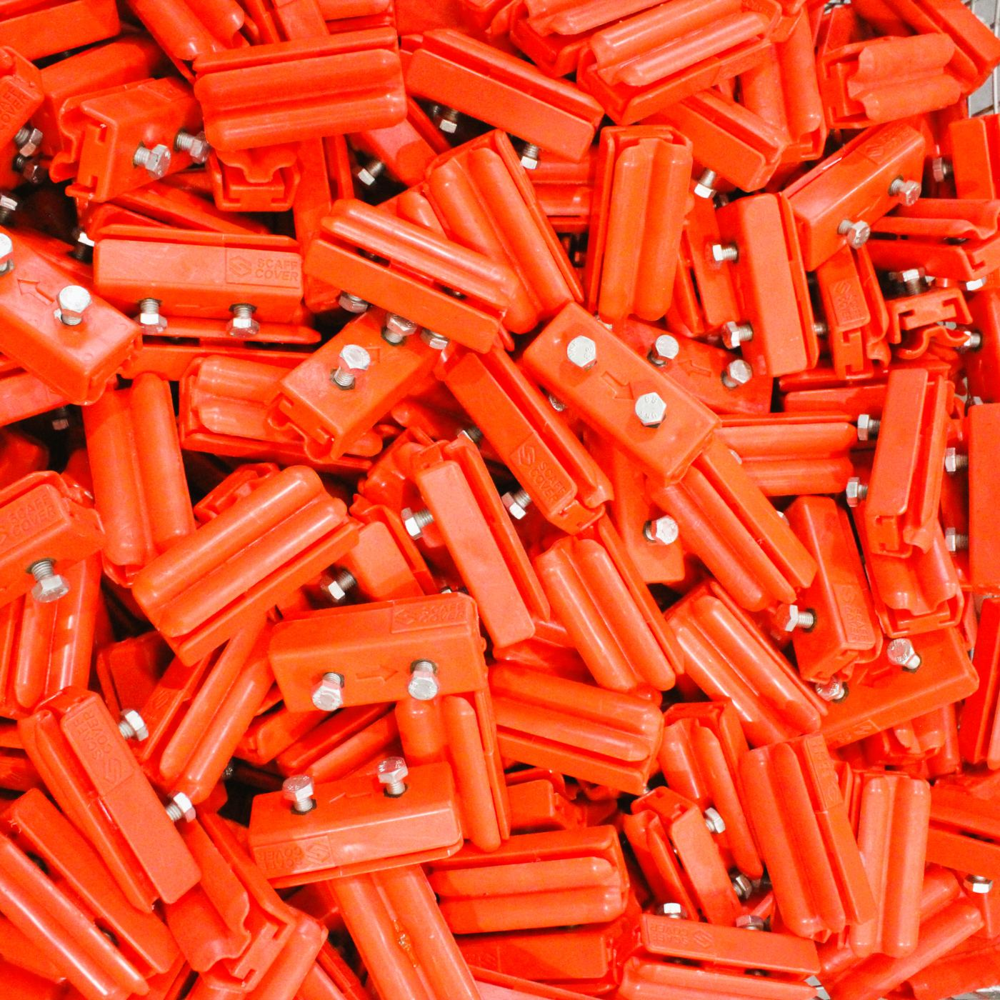
Les raccords de rail alignent les sections adjacentes, tandis que les guides introduisent le bord renforcé du panneau dans le rail. Connect assure la continuité du rail et facilite une pose maîtrisée des panneaux.
La gamme Guard propose des panneaux destinés à différents besoins : circulation d’air, protection contre les intempéries, habillage imprimé et travaux industriels. Tous utilisent l’interface de rail commune au système.
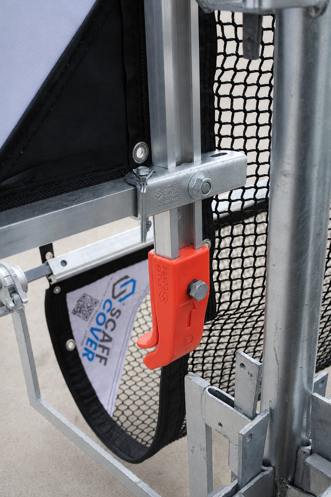
Les rails et connecteurs sont conçus pour plusieurs chantiers plutôt que pour un usage unique. Les panneaux se retirent par coulissement pour être réutilisés, stockés ou remplacés par un autre produit Guard sur le chantier suivant.
Le système est conçu pour différentes familles d’échafaudages : multidirectionnel de type Ringlock, Kwikstage, Cuplock, ainsi que tubes et raccords. Le choix du connecteur et la configuration sont étudiés pour votre chantier.
La structure porteuse, les points d’amarrage et les charges liées au confinement sont propres au projet et doivent être vérifiés pour chaque chantier par l’ingénieur chargé de l’échafaudage.
Chaque panneau Guard coulisse dans le même rail TRAKTEC. Découvrez l’usage de chacun ou sélectionnez jusqu’à trois produits pour les comparer côte à côte.
| Caractéristique | {{ c.name }} |
|---|---|
| {{ row.label }} | {{ cell }} |
Contactez notre équipe pour obtenir les informations techniques adaptées à votre projet.
{{ productActive.useCaseBody }}
Se renseigner sur {{ productActive.name }}{{ productActive.fabricSummary }}
{{ productActive.intro }}
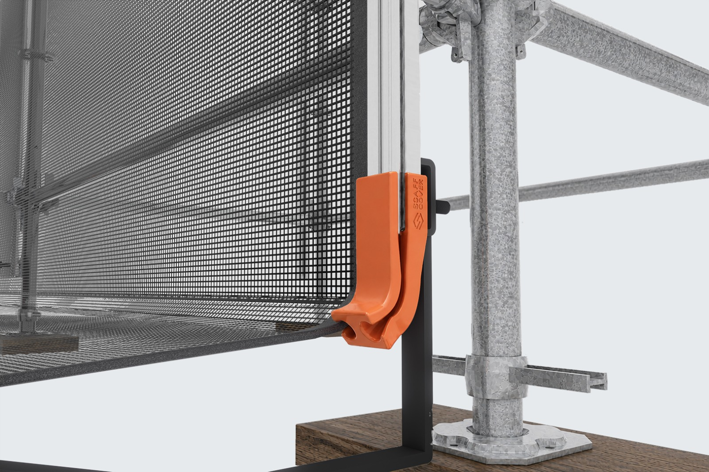
{{ productActive.connectBlurb }}
Voir comment le système s’assemble →Ingénierie et documentation
Le confinement modifie les sollicitations sur l’échafaudage. La prise au vent, les ancrages et la configuration doivent être examinés pour chaque projet, avec la note de calcul appropriée.
Les essais des assemblages permettent d’observer le comportement du système et d’éclairer les décisions de conception. Les résultats doivent être rapprochés du produit, du montage et de l’usage étudiés.
Une résistance à la rupture mesurée lors d’un essai ne constitue pas une charge admissible d’utilisation.
Le travail relatif aux exigences européennes et la préparation de la documentation technique sont en cours. Notre objectif est de disposer des informations nécessaires au lancement et de confirmer les exigences applicables avant toute fourniture.
Dimensions, masse, perméabilité ou taux d’ouverture et comportement au feu du panneau retenu.
Interfaces, compatibilité, montage et essais des connexions applicables à la configuration.
Exposition au vent, ancrages, géométrie et note de calcul de l’échafaudage.
Contactez ScaffCover pour préciser les documents disponibles et ceux à préparer pour votre projet.
Préparer mon dossier techniqueConstruction, confinement industriel, protection contre la pluie, communication imprimée et structures événementielles : une même plateforme adaptée aux exigences de chaque projet.
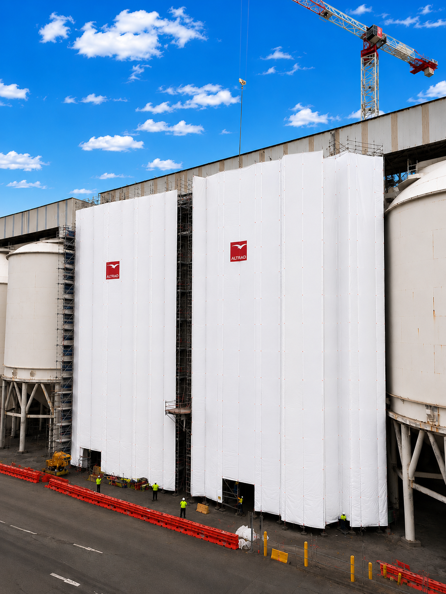
BlastGuard permet de préparer une enceinte de confinement pour le sablage et le traitement de surface. Le panneau et la configuration sont choisis selon le procédé, les projections à contenir et les contraintes du chantier.
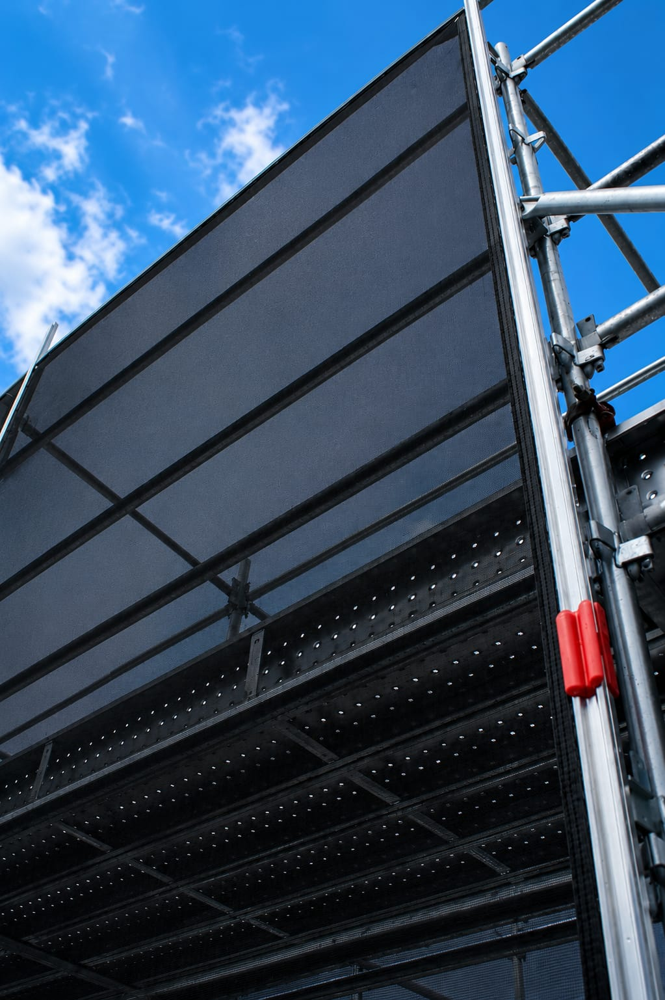
NetGuard et ShadeGuard équipent les chantiers nécessitant une retenue des débris ou une protection ajourée tout en maintenant la circulation d’air. Le panneau plein et imperméable RainGuard est utilisé lorsque la priorité est de garder une zone de travail au sec.
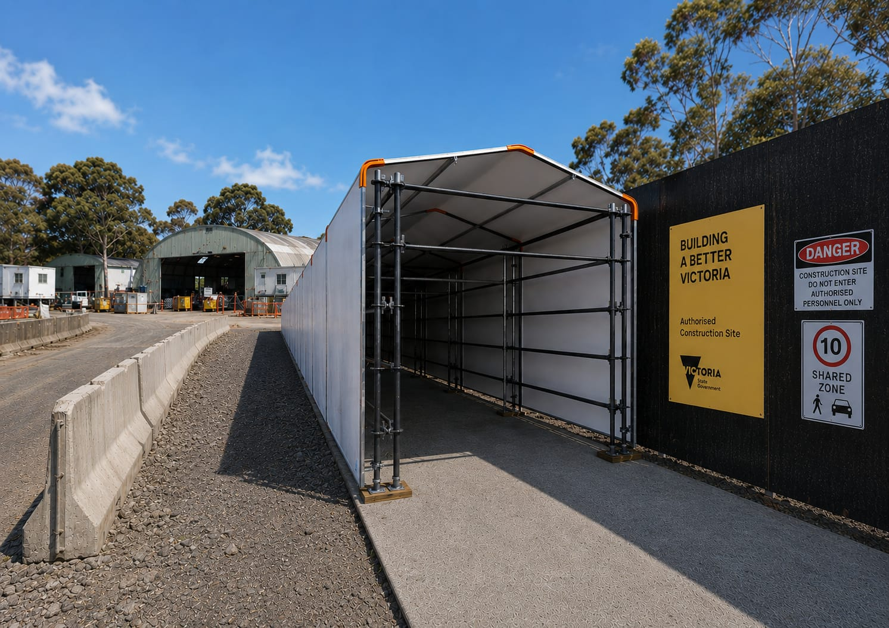
La membrane thermosoudée RainGuard couvre les passages, entrées et zones de travail qui doivent rester secs et utilisables par temps de pluie.
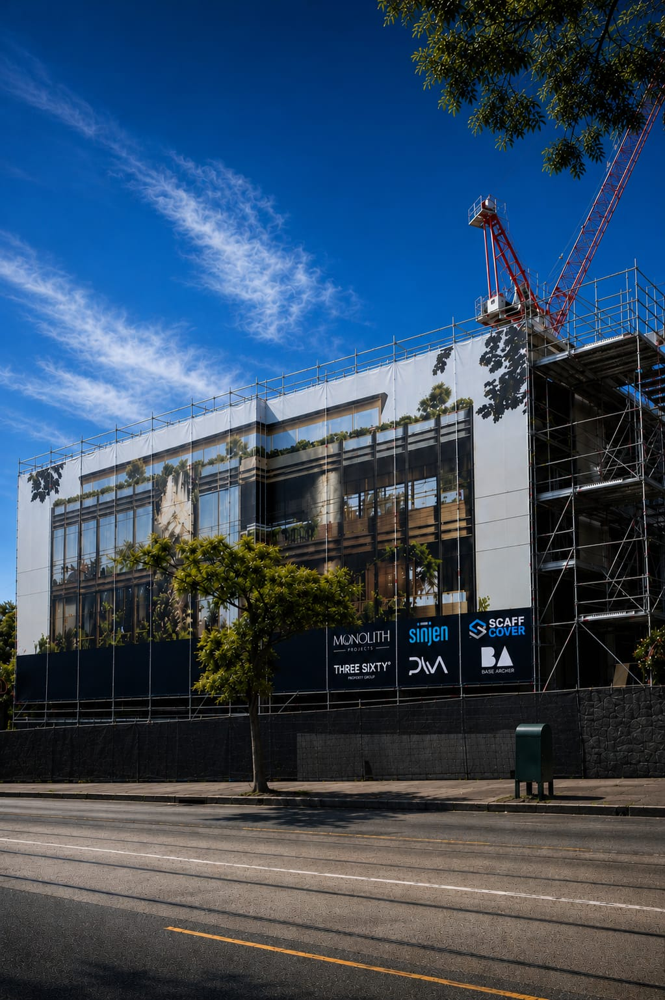
PrintGuard et PrintGuard Air transforment l’échafaudage en reproduction de façade, support de marque ou habillage de chantier, tout en conservant sa fonction de confinement.
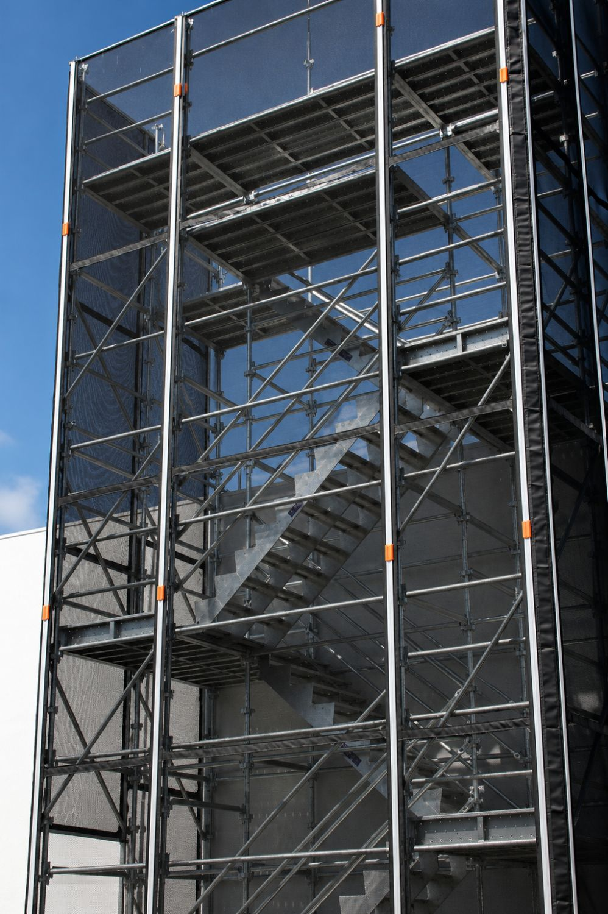
Utilisé sur des projets d’infrastructure tels que Suburban Rail Loop et North East Link, ainsi que sur des structures événementielles comme les écrans de fond qui facilitent la visibilité de la balle sur le terrain de cricket Junction Oval.
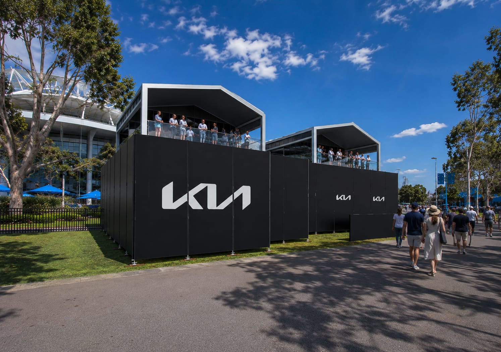
Une structure d’accueil d’entreprise aux couleurs d’une marque lors d’un grand événement sportif : le système de panneaux utilisé pour le confinement de chantier, appliqué à une installation événementielle de courte durée.
Chaque projet présente ses propres défis. ScaffCover associe une approche pratique, un système de produits intégré et des capacités de conception sur mesure pour développer une solution adaptée au chantier. Nous partons des besoins sur place, puis étudions comment y répondre, du concept initial au montage et à l’utilisation.
L’accès, le confinement, l’exposition aux intempéries, l’espace disponible et l’ordre de montage déterminent la solution à retenir. Comprendre ces contraintes en amont, avant de choisir les composants, permet de concevoir des ouvrages provisoires adaptés aux réalités du chantier.
Les composants standard Track, Core, Connect et Guard constituent une plateforme de confinement reproductible. Lorsqu’un projet exige une autre approche, des configurations spécifiques et une conception sur mesure répondent au besoin tout en conservant le même système de base. Découvrir le système →
Définition du besoin et conception, examen technique, fourniture des composants, puis montage, utilisation, inspection et reconfiguration sur chantier : un processus clair, du premier échange à l’exploitation de l’installation.
Transmettez-nous le lieu du projet, les plans, dimensions, conditions de chantier et l’usage prévu ; nous étudierons comment configurer le système en conséquence.
Les structures porteuses, les charges et les configurations propres au projet doivent faire l’objet d’un examen technique approprié.
La pose d’un connecteur et l’introduction d’un panneau dans le rail suivent le même principe, qu’il s’agisse de connecteurs pour Ringlock, Kwikstage, Cuplock ou pour un échafaudage à tubes et raccords.
Pour une présentation du montage adaptée au chantier, des plans techniques ou un briefing d’équipe, contactez-nous directement afin de l’organiser pour votre projet.
Demander une assistance au montageIndiquez le produit et l’application envisagés. Nous préciserons les documents disponibles et les informations en cours de préparation pour le lancement en France.
ScaffCover développe sa présence internationale sous une identité de marque indépendante, ouverte aux professionnels travaillant avec différentes marques d’échafaudage. Déjà disponible en Australie, ScaffCover prépare son lancement en France pour début 2027, avec sa propre équipe et sa propre implantation. Le lieu précis reste à confirmer. L’organisation envisagée comprend un appui de HSF France pour le stockage et la logistique.
Le lancement en France est prévu début 2027. Les modalités de disponibilité et de livraison seront précisées dans le cadre de cette préparation. Vous pouvez dès maintenant nous présenter un chantier ou demander à échanger sur une démonstration.
Le système de confinement modulaire standardisé de ScaffCover, faisant l’objet d’une demande de brevet, réunit rails, composants conçus pour leur fonction et gamme Guard dans une plateforme coordonnée. Il offre aux échafaudeurs, aux entreprises de travaux et aux équipes projet une approche complète du confinement pour différentes applications.
Les rails à jonc ont déjà été utilisés sur les échafaudages. ScaffCover se distingue par le système complet qui les entoure : une gamme coordonnée de rails, composants et panneaux de confinement dédiés, avec des rôles et connexions définis.
À chaque introduction sur un nouveau marché, ScaffCover vise à rendre ce système disponible sous forme de gamme standardisée. Les équipes peuvent sélectionner et configurer des composants reproductibles selon l’application, plutôt que concevoir un dispositif de confinement unique pour chaque chantier.
Le système est destiné à s’intégrer aux méthodes établies de conception et d’ingénierie des échafaudages, en utilisant les logiciels et méthodes existants pour planifier la configuration et évaluer le projet. Comme son échafaudage porteur, le confinement peut ainsi être conçu, monté, inspecté et entretenu comme un système.
Cela ne remplace pas l’ingénierie propre au projet. Le système fournit une base cohérente pour ce travail, en considérant ensemble les panneaux, connexions, échafaudage porteur et exigences locales applicables.
Nous accordons une grande importance à la conformité. Les essais, la documentation technique et des applications clairement définies sont au cœur du développement et de la présentation du système ScaffCover. Nous distinguons ce qui a été testé, les conditions d’essai et ce qui doit être évalué pour chaque projet.
Les exigences européennes et la documentation technique font actuellement l’objet d’un travail de préparation. Pour votre chantier, le panneau, l’échafaudage porteur et les conditions d’utilisation devront être examinés ensemble.
Découvrir les essais et l’ingénierie →ScaffCover est développé en Australie, avec une vision nourrie par les demandes d’équipes projet du monde entier. Notre partenariat de fabrication avec BSL associe le développement du système ScaffCover à l’expertise industrielle établie de BSL.
Nous sommes à l’écoute des échafaudeurs, des entreprises de travaux et des partenaires potentiels pour échanger sur leurs applications, les exigences de leur marché et les étapes pratiques nécessaires à l’introduction du système.
Déjà disponible en Australie, ScaffCover prépare son arrivée en France début 2027, avec sa propre équipe et sa propre implantation. Le lieu précis sera communiqué une fois confirmé.
ScaffCover est actif en Australie. Contactez-nous pour confirmer la disponibilité et les modalités de fourniture dans le pays de votre projet.
Vous préparez un projet sur l’un de ces marchés ? Renseignez-vous sur la disponibilité et la fourniture pour votre projet.
Se renseigner sur la disponibilitéScaffCover conçoit et teste le système TRAKTEC et la gamme Guard, dont la fabrication est assurée dans le cadre d’un partenariat international avec BSL.
Partenariat de fabrication →Le système de confinement ScaffCover, faisant l’objet d’une demande de brevet, apporte une nouvelle plateforme à l’industrie de l’échafaudage. Notre partenariat avec BSL apporte l’expérience industrielle et la portée internationale nécessaires à son développement sur de nouveaux marchés.
BSL a compris l’approche ScaffCover : le confinement peut constituer un système complet et reproductible, soutenu par une gamme coordonnée. Cette vision commune est à la base d’un partenariat visant à proposer le système aux échafaudeurs et équipes projet du monde entier.
Parlons de la fourniture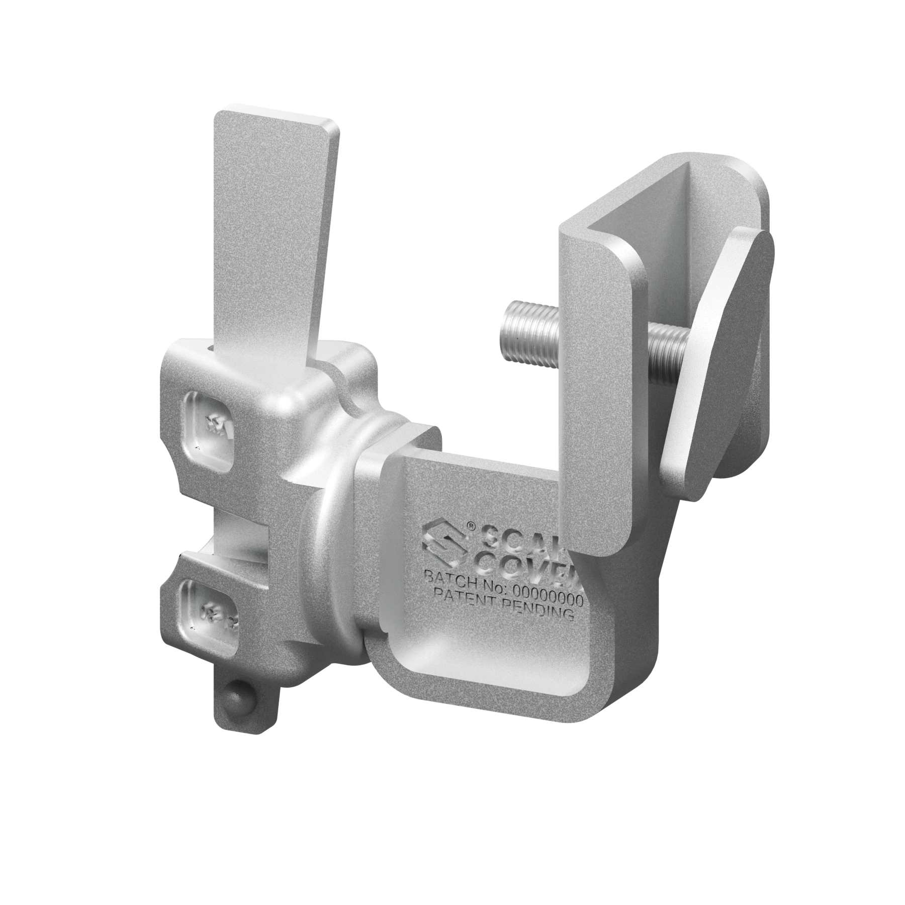
BSL conçoit, fabrique et fournit des échafaudages et des coffrages depuis 1984, avec ses propres services de conception et d’ingénierie et un réseau international de production et d’assistance commerciale. Le partenariat associe cette expérience aux connaissances acquises par ScaffCover en matière de conception, d’essais et d’applications de TRAKTEC et de la gamme Guard.
BSL apporte son expérience établie de la fabrication d’échafaudages à la production des composants ScaffCover.
ScaffCover développe le système et son identité de marque. Une demande de brevet est en cours ; elle ne constitue pas un brevet délivré.
La base industrielle et la portée internationale de BSL soutiennent la production et la fourniture lorsque ScaffCover aborde de nouveaux marchés, en associant une capacité de fabrication reproductible aux configurations adaptées à chaque projet.
ScaffCover est actif en Australie et prépare son développement international. La disponibilité et les modalités de fourniture doivent être confirmées pour chaque pays et projet.
D’autres marchés, notamment la Nouvelle-Zélande et le Canada, font partie de la perspective de développement international ; leur disponibilité doit être confirmée.
Parlons de la disponibilité des produits, des partenariats de fourniture et des exigences de votre marché.
Discuter de la fourniture sur votre marchéLa préparation des exigences européennes et des documents techniques accompagne le lancement. Contactez ScaffCover pour examiner la configuration, la disponibilité et les informations nécessaires à votre projet.
Voir les données techniques →Échangeons sur votre chantier et le confinement adapté.
28 septembre – 1er octobre 2026
Paris Expo Porte de Versailles
Hall 5.1 · Stand F038